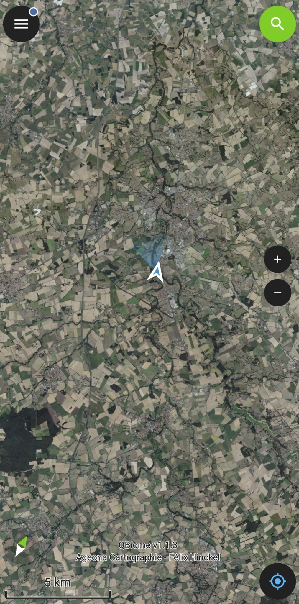
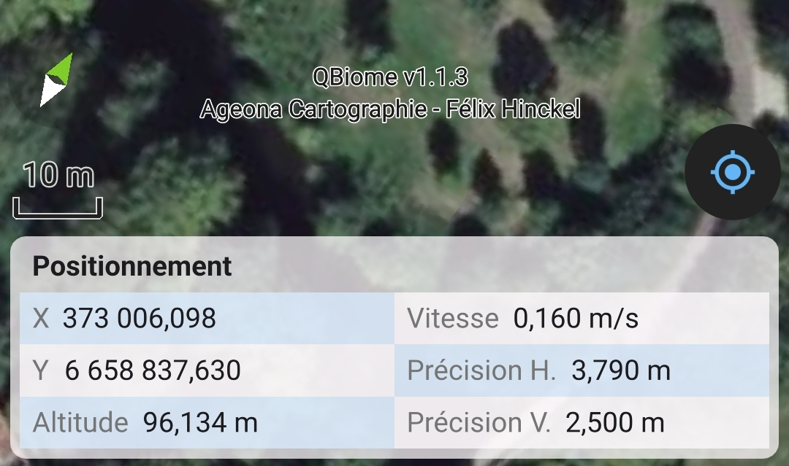
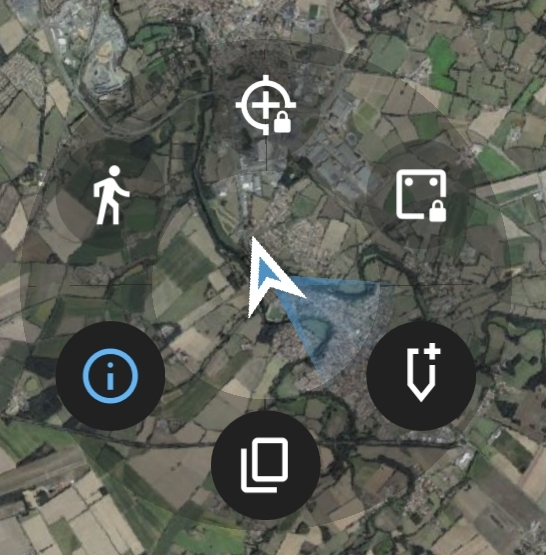

Utilisation de QField¶
L'interface¶

L'interface de QField s'organise autour d'un canevas central sur lequel s'affichent les couches du projet. Autour de ce canevas se trouvent les éléments de navigation et d'édition :
- L'échelle et la flèche du nord, en bas à gauche
- Les boutons de zoom, sur le côté
- Le bouton de recherche, en haut à droite
- Le bouton de géolocalisation, en bas à droite
- Le bouton de menu, en haut à gauche
La géolocalisation¶
Appuyer sur le bouton de géolocalisation pour l'activer — le canevas se centre alors sur votre position. Appuyer à nouveau pour recentrer à tout moment. Si le canevas est déjà centré, un second appui active le suivi de la boussole pour orienter la carte dans la direction du regard. Pour revenir à une vue orientée au nord, appuyer sur la flèche du nord.
Un appui long sur le bouton de géolocalisation ouvre un menu permettant d'afficher les Informations de position : précision GPS, altitude, coordonnées en temps réel.

L'indicateur de précision change de couleur selon la précision du signal GPS :
| Couleur | Précision |
|---|---|
| Rouge | > 5 m |
| Orange | < 5 m |
| Vert | < 1 m |
Ces seuils sont modifiables dans les paramètres de l'application.
D'autres paramètres d'affichage et de géolocalisation sont disponibles en appuyant directement sur le curseur de position.

Le menu et l'arbre des couches¶
Le bouton de menu ouvre le panneau latéral, qui donne accès à la navigation entre projets et aux paramètres de l'application.
L'arbre des couches fonctionne comme dans QGis : les groupes se déplient avec la flèche, et la visibilité de chaque couche se contrôle avec l'icône en forme d'œil. Un appui long sur une couche ouvre des options supplémentaires : afficher les étiquettes, régler l'opacité, ou afficher la liste de toutes les entités de la couche.
Passer en mode édition¶
Par défaut, QField est en mode navigation. Pour pouvoir créer ou modifier des données, il faut passer en mode édition via le bouton situé en bas à droite du menu (icône crayon). Ce mode s'applique à toutes les couches éditables du projet. Pour changer de couche active, il faut la sélectionner dans l'arbre des couches.
Numériser un point¶
En mode édition, un bouton + apparaît en bas de l'écran et un curseur se place au centre du canevas. Déplacer le canevas pour positionner le curseur à l'endroit souhaité, puis appuyer sur + pour créer le point — le formulaire s'ouvre aussitôt. Une fois les informations renseignées, valider la saisie avec le bouton ✓.
Le bouton GPS lock fixe le curseur sur la position GPS actuelle, garantissant que l'observation soit créée exactement à l'endroit où l'on se trouve.
Numériser une ligne ou un polygone¶
Pour les couches de lignes et de polygones, la géométrie se construit sommet par sommet :
- + ajoute un sommet à la position du curseur
- – supprime le dernier sommet ajouté
- ✓ valide la géométrie
- ✕ annule la saisie
L'ajout de sommets peut aussi être déclenché par les touches volume du téléphone, pratique pour garder les yeux sur le terrain.
Les outils d'aide à la numérisation, accessibles via le bouton crayon en haut à gauche, offrent des options supplémentaires :
- Capture — accrochage sur les couches visibles à l'écran
- Édition topologique — vérifie que la géométrie respecte les règles topologiques de la couche
- Main levée — dessin libre au stylet
- Accrochage d'angle — bloque la numérisation sur des angles fixes (90°, 45°…)
Numériser par suivi GPS¶
Le suivi GPS permet de tracer une ligne ou un polygone automatiquement en se déplaçant, sans appuyer sur + à chaque sommet.
Depuis le menu, faire un appui long sur la couche à numériser, sélectionner Paramètres de suivi, puis Démarrer le suivi. Pendant l'enregistrement, il est possible de continuer à saisir des observations dans d'autres couches. Pour terminer, refaire un appui long sur la couche et sélectionner Terminer le suivi.
On peut aussi lancer et arrêter un suivi sur la couche active depuis le menu curseur.
Modifier une entité existante¶
Appuyer sur une entité dans le canevas pour ouvrir la liste des entités à cet emplacement. Sélectionner l'entité souhaitée pour accéder à son formulaire, puis appuyer sur l'icône crayon pour passer en mode édition.
Le menu trois points donne accès à des actions supplémentaires : déplacer l'entité ou la supprimer.
La recherche¶
Le bouton de recherche en haut à droite permet de retrouver des entités dans les couches du projet. Il est notamment utile pour consulter les statuts d'une espèce (liste rouge, protection…).
Paramètres recommandés¶
Avant la première utilisation, deux paramètres sont à activer dans les réglages de QField :
- Mode édition rapide — permet d'utiliser les formulaires dès qu'une entité est créée, sans étape intermédiaire.
- Affichage du formulaire en plein écran — facilite la saisie sur mobile en occupant tout l'écran.���������������������������������������������������������������������������������������������������������������������������������������������������������������������������������������������������������������������������������������������������������������������������������������������������������������������������������������������������������������������������������������������������������������������������������������������������������������������������������������������������������������������������������������������������������������������������������������������������������������������������������������������������������������������������������������������������������������������������������������������������������������������������������������������������������������������������������������������������������������������������������������������������������������������������������������������������������������������������������������������������������������������������������������������������������������������������������������������������������������������������������������������������������������������������������������������������������������������������������������������������������������������������������������������������������������������������������������������������������������������������������������������������������������������������������������������������������������������������������������������������������������������������������������������������������������������������������������������������������������������������������������������������������������������������������������������������������������������������������������������������������������������������������������������������������������������������������������������������������������������������������������������������������������������������������������������������������������������������������������������������������������������������������������������������������������������������������������������������������������������������������������������������������������������������������������������������������������������������������������������������������������������������������������������������������������������������������������������������������������������������������������������������������������������������������������������������������������������������������������������������������������������������������������������������